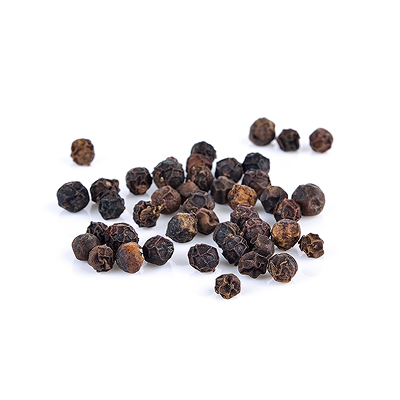
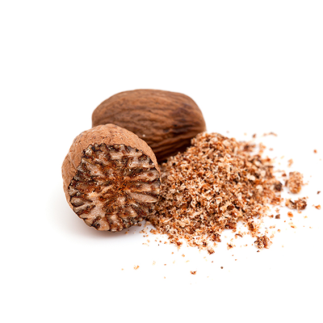
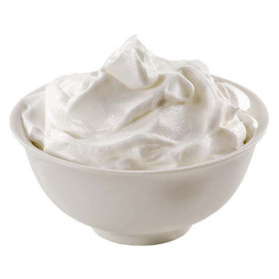
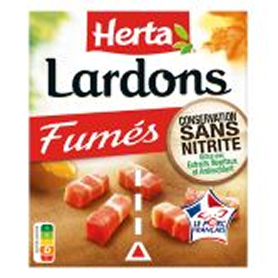
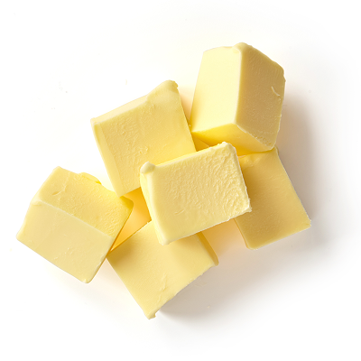

Quiche lorraine maison
55 min très facile bon marché
Ingrédients (4 personnes)

Poivre
Sel

Muscade

20cl de crème fraiche
200g de pâte brisée

200g de lardons
3 oeufs

30g de beurre
20cl de lait
Préparation
| Temps de préparation | Repos | Cuisson |
|---|---|---|
| 10 min | - | 45 min |
Étape 1
Préchauffer le four à 180°C (thermostat 6). Etaler la pâte dans un moule,
Étape 2
la piquer à la fourchette. Parsemer de copeaux de beurre.
Étape 3
Faire rissoler les lardons à la poêle puis les éponger avec une feuille d'essuie-tout.
Étape 4
Battre les oeufs, la crème fraîche et le lait.
Étape 5
Ajouter les lardons.
Étape 6
Assaisonner de sel, de poivre et de muscade.
Étape 7
Verser sur la pâte.
Étape 8
Cuire 45 à 50 min.
Étape 9
C'est prêt
Étape 10
Déguster